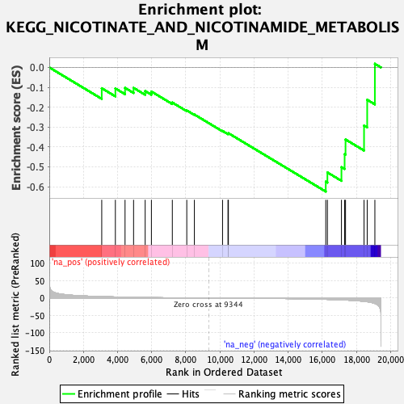
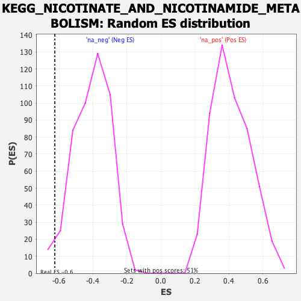

| | | Dataset | DE_genes |
| Phenotype | NoPhenotypeAvailable |
| Upregulated in class | na_neg |
| GeneSet | KEGG_NICOTINATE_AND_NICOTINAMIDE_METABOLISM |
| Enrichment Score (ES) | -0.62469816 |
| Normalized Enrichment Score (NES) | -1.5332577 |
| Nominal p-value | 0.036885247 |
| FDR q-value | 0.17953674 |
| FWER p-Value | 0.792 |
Table: GSEA Results Summary

Fig 1: Enrichment plot: KEGG_NICOTINATE_AND_NICOTINAMIDE_METABOLISM
Profile of the Running ES Score & Positions of GeneSet Members on the Rank Ordered List
| SYMBOL | RANK IN GENE LIST | RANK METRIC SCORE | RUNNING ES | CORE ENRICHMENT | | 1 | NNT | 3074 | 4.115 | -0.1047 | No |
| 2 | NMNAT3 | 3873 | 3.080 | -0.1057 | No |
| 3 | NAMPT | 4440 | 2.444 | -0.1030 | No |
| 4 | PNP | 4940 | 1.983 | -0.1029 | No |
| 5 | ENPP3 | 5620 | 1.459 | -0.1188 | No |
| 6 | NMNAT1 | 5985 | 1.245 | -0.1213 | No |
| 7 | NADK | 7211 | 0.596 | -0.1767 | No |
| 8 | ENPP1 | 8058 | 0.300 | -0.2163 | No |
| 9 | BST1 | 8504 | 0.176 | -0.2369 | No |
| 10 | NT5M | 10154 | -0.165 | -0.3197 | No |
| 11 | NMRK1 | 10473 | -0.243 | -0.3329 | No |
| 12 | NT5C3A | 10497 | -0.249 | -0.3309 | No |
| 13 | NADSYN1 | 16204 | -3.823 | -0.5749 | Yes |
| 14 | NT5C2 | 16300 | -3.939 | -0.5285 | Yes |
| 15 | NNMT | 17123 | -5.313 | -0.5016 | Yes |
| 16 | NUDT12 | 17309 | -5.750 | -0.4363 | Yes |
| 17 | NT5C | 17362 | -5.864 | -0.3626 | Yes |
| 18 | NMNAT2 | 18447 | -9.662 | -0.2925 | Yes |
| 19 | QPRT | 18632 | -10.685 | -0.1628 | Yes |
| 20 | NT5E | 19082 | -15.684 | 0.0183 | Yes |
Table: GSEA details [plain text format]

Fig 2: KEGG_NICOTINATE_AND_NICOTINAMIDE_METABOLISM: Random ES distribution
Gene set null distribution of ES for KEGG_NICOTINATE_AND_NICOTINAMIDE_METABOLISM